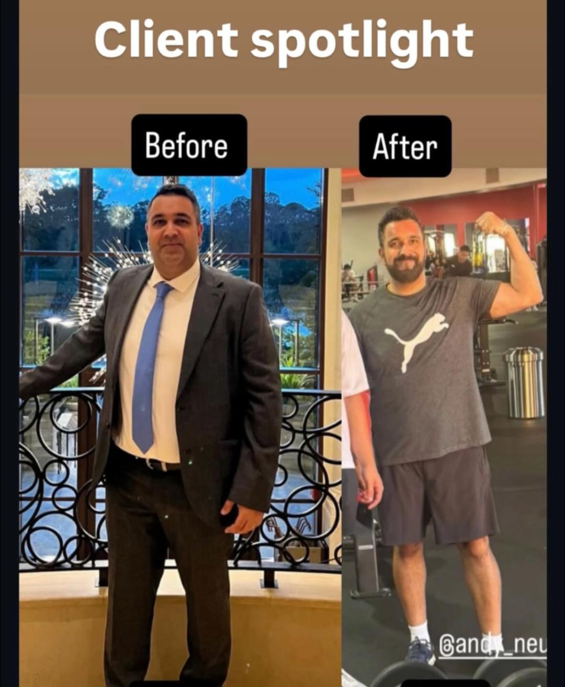
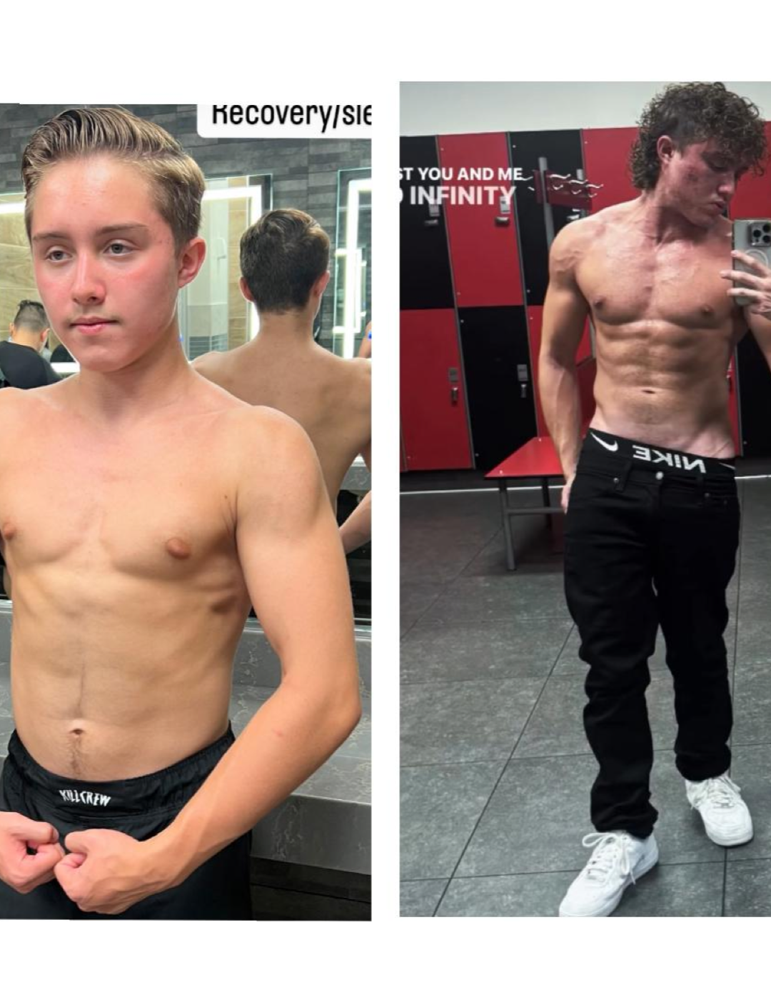
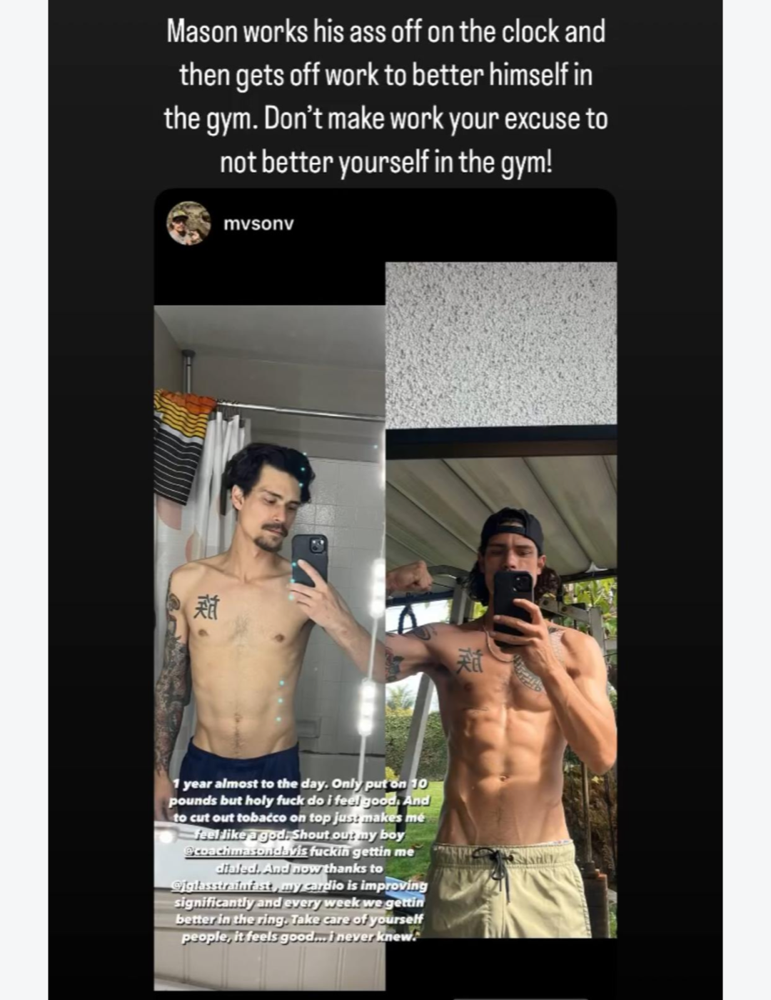

Training adapts to work, family, travel, and real obligations.
Orange County-based personal training for serious men
Personal Training for Serious Men Who Are Tired of Restarting
Build consistency that survives busy weeks with structure, accountability, and coaching that actually pays attention.
Free assessment. No hard sell. Just a serious look at fit, structure, and what would actually need to change.
Standards stay visible even when the week changes.
Direct, measured guidance instead of generic motivation.

Mason Hero Image
Use Mason's straight-on gym portrait with his face visible.
Local positioning with the structure serious men expect.
Work, family, travel, and recovery are considered from the start.
Visible change comes from standards that hold over time.
Low-pressure first step to clarify fit, structure, and next steps.
Why men reach out
You do not need more information. You need a system that holds under pressure.
Most men in this stage do not fail because training stopped working. They lose momentum because nobody is protecting consistency when stress, travel, schedule changes, or fatigue start eroding standards. Mason is built to solve that part.
Generic plans break under real life.
If the plan does not adapt to your workload, recovery, and week, it becomes one more thing to fail at instead of a system you can trust.
Low-attention trainers miss the slide.
By the time most people ask for help again, they have already been off track for weeks. Better coaching catches the drift far earlier.
Accountability changes the quality of effort.
When someone capable is paying attention, the standard rises. Sessions get done, decisions improve, and consistency becomes much more dependable.
Results and proof
Visible change comes from stable weeks, not random hard ones.
Real client progress is usually the result of better standards, better structure, and enough accountability for the work to keep compounding over time.
Real life has to fit inside the plan.
Coaching is built for men balancing work, family, recovery, and changing weeks, not fantasy calendars.
The goal is fewer restarts, not louder hype.
Better follow-through comes from structure, quick adjustments, and someone paying attention before drift becomes a pattern.
Visible change is usually the byproduct of steady weeks.
These results reflect better habits, better structure, and the kind of accountability that keeps the work compounding.

Transformation 01
Client transformation before-and-after image slot.
Better habits. Better follow-through. Better result.
A strong example of what happens when accountability carries progress across months instead of a few motivated weeks.

Transformation 02
Client transformation before-and-after image slot.
Better structure. Better consistency. Better physique.
The visible result is the proof. The real driver is staying on plan long enough for the work to compound.

Transformation 03
Client transformation before-and-after image slot.
Consistency changes more than appearance.
Strong coaching helps clients build momentum they can actually maintain, not just short bursts of effort.
What Mason actually coaches
You are not paying for workouts. You are paying for a better system.
The offer is designed around the parts serious men usually do not get from a template, an app, or a low-touch trainer.
Clarity
A plan that fits your real week, not the week you wish you had.
Structure
Clear weekly expectations so the next right action is always obvious.
Accountability
Coaching that notices when standards slip and helps you recover momentum before a bad week becomes a bad month.
Intelligent coaching
Adjustments that respect your training history, safety, workload, travel, and the realities of adult life.
Start here
Start with a free coaching assessment.
The goal is clarity before commitment: identify what is breaking consistency, map a realistic structure around your schedule, and decide whether Mason is the right coach to help make change stick.
Assess the friction
Identify what is actually breaking consistency right now.
Build a realistic plan
Create a training structure that fits work, family, and recovery.
Coach and adjust early
Protect momentum with direct attention before drift turns into a pattern.
Inside the assessment
Clarity first. Pressure low.
This first step is designed to give serious men a clearer read on fit, expectations, and what real progress would need to look like.
- A clear look at where consistency is breaking down right now.
- A smarter structure for training around work, family, and life.
- An honest read on fit, expectations, and next steps.
No obligation if it is not the right fit. The goal is clarity first.
Book a Free Coaching Assessment
About Mason Image
Use Mason's shirtless gym image to support the coaching and physique credibility section.
About Mason
Mason is for men who want coaching that actually pays attention.
Based in Orange County, Mason works with serious men who do not need louder motivation. They need a coach who communicates clearly, understands the real obstacles, and is invested enough to keep standards from quietly slipping.
Mason's coaching is built around that standard: calm, professional, structured, and genuinely attentive to what makes consistency possible for an adult with real responsibilities.
- Clear expectations instead of vague encouragement.
- Thoughtful progression instead of random intensity.
- Adaptation when life changes instead of guilt when it does.
- Real care and professional attention instead of low-touch check-ins.
Best fit
This is likely a strong fit if you want:
- Accountability more than entertainment.
- A coach who respects your schedule and still expects standards.
- Guidance that feels intelligent, measured, and professional.
- Consistency that survives busy weeks instead of collapsing under them.
Not the right fit
This will be a poor fit if you want:
- Generic workouts with minimal communication.
- Extreme dieting, punishment, or performative motivation.
- A coach who says yes to everything and challenges nothing.
- Quick fixes without structure, patience, or personal responsibility.
FAQ
Questions serious clients usually ask before applying.
Where is Mason based?
Mason is based in Orange County and works with serious men who want direct coaching, better structure, and more dependable consistency.
Who is this best for?
Men who already believe in training, want stronger accountability, and are tired of slipping in and out of consistency when life gets busy.
Do I need to be local to reach out?
No. The assessment is the right place to talk through your schedule, location, and the coaching format that makes the most sense.
I already know how to train. Why would I need a coach?
Because the issue is rarely knowledge. The value is having structure, accountability, feedback, and someone paying attention before inconsistency becomes the pattern again.
What if my schedule changes from week to week?
That is exactly why intelligent coaching matters. The plan should adapt to real life without letting standards disappear.
How often do clients usually train?
That depends on training history, recovery, schedule, and what you can realistically sustain. Mason builds around a structure you can actually repeat.
What does the assessment cost?
The coaching assessment is free. It is meant to create clarity before any commitment gets discussed.
Is this only for men who want dramatic body transformation?
No. Many men apply because they want to feel more in control, train more consistently, protect strength and energy, and stop falling back into the same cycle.
What if I have started and stopped many times before?
That is one of the clearest signs that accountability and better structure may be the missing piece. Repetition does not mean you are incapable. It usually means the system has been wrong.
What happens after I apply?
Mason will review your application, assess fit, and use the assessment process to understand your situation, constraints, and what real progress would need to look like.
Will this feel like a sales call?
No. The point of the assessment is to get clear on fit, structure, and what would actually help. If it is not the right fit, that gets clarified early too.
Final step
If you are tired of restarting, take the next step while the intention is still clear.
The right next step is getting honest about what has been missing and whether better coaching can solve it.
Book Your Free Coaching Assessment